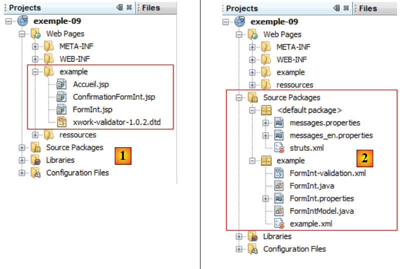
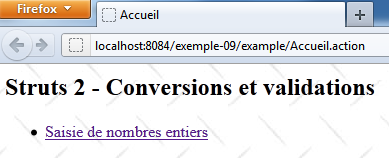
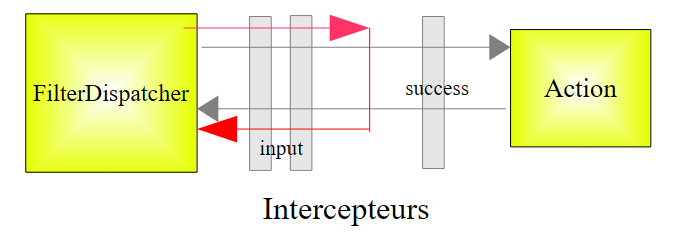

11. Beispiel 09 – Konvertierung und Validierung von Ganzzahlen
Wir widmen uns nun einer Reihe von Beispielen zur Konvertierung und Validierung von Formularparametern. Das Problem stellt sich wie folgt dar: Um eine URL der Form [http://machine:port/.../Action] zu verarbeiten, instanziiert der Controller [FilterDispatcher] die Klasse, die die angeforderte Aktion implementiert, und führt eine ihrer Methoden aus – standardmäßig die Methode mit dem Namen execute. Der Aufruf dieser Methode „execute“ durchläuft eine Reihe von Interceptoren:
 |
Die Liste der Interceptoren ist in der Datei [struts-default.xml] im Stammverzeichnis des Archivs [struts2-core.jar] definiert. Die dort definierte Liste der Interceptoren lautet wie folgt:
<interceptor-stack name="defaultStack">
<interceptor-ref name="exception"/>
<interceptor-ref name="alias"/>
<interceptor-ref name="servletConfig"/>
<interceptor-ref name="i18n"/>
<interceptor-ref name="prepare"/>
<interceptor-ref name="chain"/>
<interceptor-ref name="debugging"/>
<interceptor-ref name="scopedModelDriven"/>
<interceptor-ref name="modelDriven"/>
<interceptor-ref name="fileUpload"/>
<interceptor-ref name="checkbox"/>
<interceptor-ref name="multiselect"/>
<interceptor-ref name="staticParams"/>
<interceptor-ref name="actionMappingParams"/>
<interceptor-ref name="params">
<param name="excludeParams">dojo\..*,^struts\..*</param>
</interceptor-ref>
<interceptor-ref name="conversionError"/>
<interceptor-ref name="validation">
<param name="excludeMethods">input,back,cancel,browse</param>
</interceptor-ref>
<interceptor-ref name="workflow">
<param name="excludeMethods">input,back,cancel,browse</param>
</interceptor-ref>
</interceptor-stack>
Unter den Interceptoren gibt es einen, der dafür zuständig ist, die Werte valeuri der Parameter parami, die der Anfrage in der Form parami=valeuri beigefügt sind, in die Aktion einzufügen. Es ist bekannt, dass valeuri über die Methode setParami in das Feld parami der Aktion eingefügt wird, sofern diese existiert. Andernfalls erfolgt keine Einfügung und es wird kein Fehler gemeldet.
Die Zeichenfolge „parami=valeuri“ ist eine Zeichenfolge. Bislang wurde „valeuri“ in Felder vom Typ „parami“ eingefügt:
Das Einfügen der Zeichenfolge valeuri als Wert der Zeichenfolge parami stellte kein Problem dar. Wenn parami nicht vom Typ String ist, muss valeuri von parami in den Typ Ti konvertiert werden. Das ist das Problem bei der Konvertierung. Wenn man beispielsweise möchte, dass ein Alter eine ganze Zahl ist, schreibt man in die Aktion:
Außerdem möchte man möglicherweise das Alter auf den Bereich zwischen 1 und 150 beschränken. Hier liegt ein Validierungsproblem vor. Der Parameter parami kann zwar in den richtigen Typ konvertiert werden, ist aber dennoch nicht gültig. Es sind also zwei Schritte erforderlich. Kehren wir zum Schema der Bearbeitung einer Anfrage zurück:
 |
Zwei Interceptoren kümmern sich jeweils um die Konvertierung und die Validierung der Parameter. Wenn einer der Schritte fehlschlägt, wird die Anfrage nicht an die Aktion weitergeleitet (roter Pfad oben). Das Formular, über das die fehlerhaften Parameter gesendet wurden, wird mit Fehlermeldungen erneut angezeigt.
Die für die Konvertierung und Validierung der Parameter zuständigen Interceptors sind die Interceptors conversionError und validation in den Zeilen 19 und 20 der zuvor dargestellten Interceptor-Liste. In den Zeilen 20–22 ist zu beachten, dass der Interceptor validation nicht angewendet wird, wenn die aufgerufene Methode eine der folgenden ist: input, back, cancel, browse. Diese Eigenschaft werden wir im weiteren Verlauf nutzen.
Zunächst befassen wir uns mit der Konvertierung und Validierung von Ganzzahlen. Wir werden uns für dieses erste Beispiel etwas Zeit nehmen, da bei der Validierung zahlreiche Aspekte eine Rolle spielen. Sobald diese bekannt sind, werden wir die folgenden Beispiele zügiger durchgehen.
11.1. Das Formular
 |
- in [1], das Eingabeformular
- in [2], das Ergebnis bei einer Validierung ohne Eingabe von Werten
11.2. Das NetBeans-Projekt
Das NetBeans-Projekt sieht wie folgt aus:
 |
- in [1] die drei Ansichten der Anwendung
- in [2]: Quellcode, internationalisierte Meldungsdateien und Struts-Konfigurationsdateien.
11.3. Struts-Konfiguration
Die Anwendung wird über die Dateien [struts.xml] und [example.xml] konfiguriert.
Die Datei [struts.xml] lautet wie folgt:
<?xml version="1.0" encoding="UTF-8" ?>
<!DOCTYPE struts PUBLIC
"-//Apache Software Foundation//DTD Struts Configuration 2.0//EN"
"http://struts.apache.org/dtds/struts-2.0.dtd">
<struts>
<constant name="struts.custom.i18n.resources" value="messages" />
<include file="example/example.xml"/>
<package name="default" namespace="/" extends="struts-default">
<default-action-ref name="index" />
<action name="index">
<result type="redirectAction">
<param name="actionName">Accueil</param>
<param name="namespace">/example</param>
</result>
</action>
</package>
</struts>
Die Zeilen 12–18 definieren die Aktion [/example/Accueil] als Standardaktion, wenn der Benutzer keine Angabe macht.
Die Datei [example.xml] lautet wie folgt:
<?xml version="1.0" encoding="UTF-8" ?>
<!DOCTYPE struts PUBLIC
"-//Apache Software Foundation//DTD Struts Configuration 2.0//EN"
"http://struts.apache.org/dtds/struts-2.0.dtd">
<struts>
<package name="example" namespace="/example" extends="struts-default">
<action name="Accueil">
<result name="success">/example/Accueil.jsp</result>
</action>
<action name="FormInt" class="example.FormInt">
<result name="input">/example/FormInt.jsp</result>
<result name="cancel" type="redirect">/example/Accueil.jsp</result>
<result name="success">/example/ConfirmationFormInt.jsp</result>
</action>
</package>
</struts>
- Zeilen 8–10: Die Aktion [Accueil] lässt die Ansicht [Accueil.jsp] anzeigen
- Zeile 11: Die Aktion [FormInt] führt standardmäßig die Methode execute der Klasse [example.FormInt] aus. Wir werden sehen, dass zwei weitere Methoden ausgeführt werden, nämlich die Methoden input und cancel. Diese Methoden werden dann in den Parametern der Abfrage angegeben.
- Zeile 12: Der Schlüssel input bewirkt die Anzeige der Ansicht [FormInt.jsp] (Zeile 5). Diese Ansicht ist die des Formulars.
- Zeile 13: Der Schlüssel cancel wird von einer Methode cancel zurückgegeben, die dem Link [Annuler] zugeordnet ist. Die gerenderte Ansicht ist dann nach einer Weiterleitung (type=redirect) die Ansicht [Accueil.jsp].
- Zeile 14: Der Schlüssel success wird von der Methode execute der Aktion [FormInt] zurückgegeben. Wenn die Anfrage die Methode execute erreicht, bedeutet dies, dass sie alle Interceptoren erfolgreich durchlaufen hat, insbesondere diejenigen, die die Gültigkeit der Parameter überprüfen. Die Methode execute gibt dann lediglich den Schlüssel success zurück, der die Bestätigungsansicht [ConfirmationInt.jsp] anzeigt.
11.4. Die Meldungsdateien
Die Datei [messages.properties] sieht wie folgt aus:
Accueil.titre=Accueil
Accueil.message=Struts 2 - Conversions et validations
Accueil.FormInt=Saisie de nombres entiers
Form.titre=Conversions et validations
FormInt.message=Struts 2 - Conversion et validation de nombres entiers
Form.submitText=Valider
Form.cancelText=Annuler
Form.clearModel=Raz mod\u00e8le
Confirmation.titre=Confirmation
Confirmation.message=Confirmation des valeurs saisies
Confirmation.champ=champ
Confirmation.valeur=valeur
Confirmation.lien=Formulaire de test
Zusätzlich zu dieser Datei verwenden die Ansichten die folgende Datei [FormInt.properties]:
int1.prompt=1-Nombre entier positif de deux chiffres
int1.error=Tapez un nombre entier positif de deux chiffres
int2.prompt=2-Nombre entier
int2.error=Tapez un nombre entier
int3.prompt=3-Nombre entier >=-1
int3.error=Tapez un nombre entier >=-1
int4.prompt=4-Nombre entier <=10
int4.error=Tapez un nombre entier <=10
int5.prompt=5-Nombre entier dans l''intervalle [1,10]
int5.error=Tapez un nombre entier dans l''intervalle [1,10]
int6.prompt=6-Nombre entier dans l''intervalle [2,20]
int6.error=Tapez un nombre entier dans l''intervalle [2,20]
Die Datei „[FormInt.properties]“ wird nur dann verwendet, wenn die Aktion, die die Ansicht generiert hat, die Aktion „[FormInt]“ ist. Dies ist eine Möglichkeit, die Meldungsdatei zu segmentieren, falls diese zu groß ist. Die Meldungen der Aktion „Action“ werden in der Datei [Action.properties] internationalisiert.
11.5. Ansichten und Aktionen
Im Folgenden werden die Ansichten und Aktionen der Anwendung vorgestellt. Entsprechend der Konfiguration der Anwendung:
<?xml version="1.0" encoding="UTF-8" ?>
<!DOCTYPE struts PUBLIC
"-//Apache Software Foundation//DTD Struts Configuration 2.0//EN"
"http://struts.apache.org/dtds/struts-2.0.dtd">
<struts>
<package name="example" namespace="/example" extends="struts-default">
<action name="Accueil">
<result name="success">/example/Accueil.jsp</result>
</action>
<action name="FormInt" class="example.FormInt">
<result name="input">/example/FormInt.jsp</result>
<result name="cancel" type="redirect">/example/Accueil.jsp</result>
<result name="success">/example/ConfirmationFormInt.jsp</result>
</action>
</package>
</struts>
sehen wir, dass es drei Ansichten [Accueil.jsp, FormInt.jsp, ConfirmationFormInt.jsp] und zwei Aktionen [Accueil, FormInt] gibt.
11.5.1. Accueil.jsp
Die Ansicht [Accueil.jsp] sieht wie folgt aus:

Ihr Code lautet wie folgt:
<%@ page contentType="text/html; charset=UTF-8" pageEncoding="UTF-8"%>
<%@ taglib prefix="s" uri="/struts-tags" %>
<html>
<head>
<title><s:text name="Accueil.titre"/></title>
<s:head/>
</head>
<body background="<s:url value="/ressources/standard.jpg"/>">
<h2><s:text name="Accueil.message"/></h2>
<ul>
<li>
<s:url id="url" action="FormInt!input"/>
<s:a href="%{url}"><s:text name="Accueil.FormInt"/></s:a>
</li>
</ul>
</body>
</html>
Der Link in Zeile 14 erzeugt den folgenden HTML-Code:
<a href="<a href="view-source:http://localhost:8084/exemple-09/example/FormInt.action">/exemple-09/example/FormInt!input.action</a>">Saisie de nombres entiers</a>
Es handelt sich also um einen Link zur Aktion [FormInt], die in [example.xml] wie folgt konfiguriert ist:
<action name="FormInt" class="example.FormInt">
<result name="input">/example/FormInt.jsp</result>
<result name="cancel" type="redirect">/example/Accueil.jsp</result>
<result name="success">/example/ConfirmationFormInt.jsp</result>
</action>
Ein Klick auf den Link instanziiert somit die Klasse [example.FormInt] und führt deren Methode input aus. Da diese nicht existiert, wird stattdessen die Methode input der übergeordneten Klasse ActionSupport ausgeführt. Diese führt nichts anderes aus, als den Schlüssel input zurückzugeben. Daher wird die Ansicht [/example/FormInt.jsp] angezeigt.
Außerdem ist die Methode input eine der Methoden, die vom Validierungs-Interceptor ignoriert werden:
<interceptor-ref name="validation">
<param name="excludeMethods">input,back,cancel,browse</param>
</interceptor-ref>
Daher findet keine Parametervalidierung statt. Dies ist wichtig, da hier keine Parameter vorhanden sind und wir später sehen werden, dass die Validierungsregeln das Vorhandensein von sechs Parametern vorschreiben.
11.5.2. Die Aktion [FormInt]
Die Aktion [FormInt] ist der folgenden Klasse [FormInt] zugeordnet:
package example;
import com.opensymphony.xwork2.ActionSupport;
import com.opensymphony.xwork2.ModelDriven;
import java.util.Map;
import org.apache.struts2.interceptor.SessionAware;
import org.apache.struts2.interceptor.validation.SkipValidation;
public class FormInt extends ActionSupport implements ModelDriven, SessionAware {
// Konstruktor ohne Parameter
public FormInt() {
}
// Aktionsmodell
public Object getModel() {
if (session.get("model") == null) {
session.put("model", new FormIntModel());
}
return session.get("model");
}
public String cancel() {
// Das Modell wird bereinigt
((FormIntModel) getModel()).clearModel();
// Ergebnis
return "cancel";
}
@SkipValidation
public String clearModel() {
// Modell zurücksetzen
((FormIntModel) getModel()).clearModel();
// Ergebnis
return INPUT;
}
// SessionAware
private Map<String, Object> session;
public void setSession(Map<String, Object> session) {
this.session = session;
}
// Validierung
@Override
public void validate() {
// Ist die Eingabe „int6“ gültig?
if (getFieldErrors().get("int6") == null) {
int int6 = Integer.parseInt(((FormIntModel) getModel()).getInt6());
if (int6 < 2 || int6 > 20) {
addFieldError("int6", getText("int6.error"));
}
}
}
}
Wir werden diesen Code nach und nach erläutern, sobald es erforderlich ist. Vorerst gilt:
- Zeile 9: Die Klasse [FormInt] implementiert zwei Schnittstellen:
- ModelDriven, die nur eine Methode hat, und getModel in Zeile 16
- SessionAware, die nur eine Methode hat, nämlich setSession in Zeile 41
- Zeilen 16–21: Implementierung der Schnittstelle ModelDriven. Zur Erinnerung: Diese Schnittstelle ermöglicht es, das Modell einer Ansicht in eine externe Klasse auszulagern, in diesem Fall in die folgende Klasse [FormIntModel]:
package example;
public class FormIntModel {
// Konstruktor ohne Parameter
public FormIntModel() {
}
// Formularfelder
private String int1;
private Integer int2;
private Integer int3;
private Integer int4;
private Integer int5;
private String int6;
// Vorlage leeren
public void clearModel(){
int1=null;
int2=null;
int3=null;
int4=null;
int5=null;
int6=null;
}
// Getter und Setter
...
}
Das Modell [FormIntModel] verfügt über sechs Felder, die den sechs Eingabefeldern der Ansicht [FormInt.jsp] entsprechen. Diese sechs Felder nehmen die übermittelten Werte entgegen. Vier davon haben den Typ Integer. Für diese Felder stellt sich daher das Problem der Konvertierung von String nach Integer. Mit der Methode clearModel lässt sich das Modell zurücksetzen.
Kommen wir zurück zur Methode getModel der Aktion [FormInt]:
// Aktionsmodell
public Object getModel() {
if (session.get("model") == null) {
session.put("model", new FormIntModel());
}
return session.get("model");
}
- Zeilen 3–5: Das Modell wird in der Sitzung gesucht. Ist es dort nicht vorhanden, wird eine Instanz des Modells erstellt und in die Sitzung aufgenommen.
- Zeile 6: Während bei jeder neuen Anfrage an die Aktion eine Instanz der Aktion erstellt wird, verbleibt deren Modell in der Sitzung.
Wir sehen, dass die Klasse keine Methode „input“ definiert, aber die übergeordnete Klasse verfügt über eine solche, die den Schlüssel „input“ zurückgibt. Die Ausführung dieser Methode führt zur Anzeige der Ansicht „[FormInt.jsp]“, die wir nun vorstellen.
11.5.3. Die Ansicht [FormInt.jsp]
Die Ansicht [FormInt.jsp] sieht wie folgt aus:
 |
- in [1] das leere Formular
- in [2] das Formular nach einer Validierung mit fehlerhaften Parametern.
Der Code lautet wie folgt:
<%@ page contentType="text/html; charset=UTF-8" pageEncoding="UTF-8"%>
<%@ taglib prefix="s" uri="/struts-tags" %>
<html>
<head>
<title><s:text name="Form.titre"/></title>
<s:head/>
</head>
<body background="<s:url value="/ressources/standard.jpg"/>">
<h2><s:text name="FormInt.message"/></h2>
<s:form name="formulaire" action="FormInt">
<s:textfield name="int1" key="int1.prompt"/>
<s:textfield name="int2" key="int2.prompt"/>
<s:textfield name="int3" key="int3.prompt"/>
<s:textfield name="int4" key="int4.prompt"/>
<s:textfield name="int5" key="int5.prompt"/>
<s:textfield name="int6" key="int6.prompt"/>
<s:submit key="Form.submitText" method="execute"/>
</s:form>
<br/>
<s:url id="url" action="FormInt" method="cancel"/>
<s:a href="%{url}"><s:text name="Form.cancelText"/></s:a>
<br/>
<s:url id="url" action="FormInt" method="clearModel"/>
<s:a href="%{url}"><s:text name="Form.clearModel"/></s:a>
</body>
</html>
- Zeilen 12–17: Die sechs Eingabefelder entsprechen den sechs Feldern des Modells [FormIntModel] der Aktion [FormInt]. Bei der Anzeige der Ansicht werden die Attribute value der Eingabefelder für den von diesen Feldern angezeigten Wert verwendet. Fehlt das Attribut value, wird stattdessen das Attribut name verwendet.
- Zeile 12: Das Eingabefeld wird (name) dem Feld int1 der Aktion oder ihres Modells zugeordnet, sofern die Aktion die Schnittstelle ModelDriven implementiert. Dies ist hier der Fall. Dies gilt auch für alle anderen Felder.
- Zeile 18: Die Schaltfläche [Valider] übermittelt die Eingaben an die in Zeile 11 definierte Aktion [FormInt]. Dabei wird deren Methode execute ausgeführt.
- Zeilen 21–22: Der Link [Annuler] führt die Methode [FormInt.cancel] aus.
- Zeilen 24–25: Der Link [Raz modèle] führt die Methode [FormInt.clearModel] aus.
11.5.4. Die Ansicht [ConfirmationFormInt.jsp]
 |
Sie wird angezeigt, wenn alle Eingaben im Formular [FormInt.jsp] gültig sind.
- In [1] werden gültige Werte
- in [2] wird die Bestätigungsseite
Der Code der Ansicht [ConfirmationInt.jsp] lautet wie folgt:
<%@ page contentType="text/html; charset=UTF-8" pageEncoding="UTF-8"%>
<%@ taglib prefix="s" uri="/struts-tags" %>
<html>
<head>
<title><s:text name="Confirmation.titre"/></title>
<s:head/>
</head>
<body background="<s:url value="/ressources/standard.jpg"/>">
<h2><s:text name="Confirmation.message"/></h2>
<table border="1">
<tr>
<th><s:text name="Confirmation.champ"/></th>
<th><s:text name="Confirmation.valeur"/></th>
</tr>
<tr>
<td><s:text name="int1.prompt"/></td>
<td><s:property value="int1"/></td>
</tr>
<tr>
<td><s:text name="int2.prompt"/></td>
<td><s:property value="int2"/></td>
</tr>
<tr>
<td><s:text name="int3.prompt"/></td>
<td><s:property value="int3"/></td>
</tr>
<tr>
<td><s:text name="int4.prompt"/></td>
<td><s:property value="int4"/></td>
</tr>
<tr>
<td><s:text name="int5.prompt"/></td>
<td><s:property value="int5"/></td>
</tr>
<tr>
<td><s:text name="int6.prompt"/></td>
<td><s:property value="int6"/></td>
</tr>
</table>
<br/>
<s:url id="url" action="FormInt" method="input"/>
<s:a href="%{url}"><s:text name="Confirmation.lien"/></s:a>
</body>
</html>
Um diesen Code zu verstehen, muss man bedenken, dass die Ansicht nach der Instanziierung der Klasse [FormInt] angezeigt wird. Die Felder dieser Klasse und ihres Modells [FormIntModel] sind daher für die Ansicht zugänglich.
- Zeilen 16–38: Die Werte der sechs Felder werden angezeigt
- Zeilen 42–43: Ein Link zur Aktion [FormInt]. Der für diesen Link generierte Code lautet wie folgt:
<a href="/exemple-09/example/FormInt!input.action">Formulaire de test</a>
Die spezifische URL des Links gibt an, dass die Methode input der Aktion [FormInt] die Anfrage bearbeiten soll. Zur Erinnerung: Die Konfiguration der Aktion [FormInt] in [example.xml] lautet wie folgt:
<action name="FormInt" class="example.FormInt">
<result name="input">/example/FormInt.jsp</result>
<result name="cancel" type="redirect">/example/Accueil.jsp</result>
<result name="success">/example/ConfirmationFormInt.jsp</result>
</action>
Die Methode input der Klasse [FormInt] entspricht der ihrer übergeordneten Klasse ActionSupport. Die Ausführung der Methode input der Klasse [FormInt] erfolgt nach der Ausführung der Interceptoren
 |
Es ist bekannt, dass der Aufruf der Methode input vom Validierungs-Interceptor ignoriert wird. Es findet daher keine Validierung statt.
Die Ansicht [FormInt.jsp] wird angezeigt:
 |
In [2] erhalten die Eingabefelder ihre Eingabewerte zurück. Das mag normal erscheinen, ist es aber nicht. Da die Aktion [FormInt] aufgerufen wurde, wurde die zugehörige Klasse [FormInt] instanziiert. Da diese Klasse die Schnittstelle ModelDriven implementiert, wurde ihre Methode getModel aufgerufen:
// Aktionsmodell
public Object getModel() {
if (session.get("model") == null) {
session.put("model", new FormIntModel());
}
return session.get("model");
}
Man sieht, dass das Modell der Aktion aus der Sitzung abgerufen wird. Im vorherigen Schritt war dieses Modell durch die übermittelten Werte aktualisiert worden. Diese Werte werden also wiederhergestellt. Hätte man das Modell nicht in die Sitzung gespeichert, hätte man in der Ansicht [FormInt.jsp] sechs leere Felder vorgefunden.
11.5.5. Die Aktion [FormInt!clearModel]
Die Aktion [Formint!clearModel] wird durch einen Klick auf den Link [Raz modèle] ausgelöst:
 |
- in [1], das Formular nach einer fehlerhaften Eingabe
- in [2], das Formular nach einem Klick auf den Link [Raz modèle].
Die Methode [FormInt.clearModel] lautet wie folgt:
@SkipValidation
public String clearModel() {
// Modell zurücksetzen
((FormIntModel) getModel()).clearModel();
// Ergebnis
return INPUT;
}
- Zeile 1: Es ist keine Validierung erforderlich. Dies wird mit der Notation @SkipValidation angegeben. Der Validierungs-Interceptor führt in diesem Fall keine Validierungen durch.
- Zeile 4: Die Methode [FormIntModel].clearModel wird ausgeführt. Wir sind ihr bereits begegnet. Sie setzt die sechs Felder des Modells auf null zurück.
- Zeile 7: Die Methode gibt den Schlüssel input zurück.
Kehren wir nun zur Konfiguration der Aktion [FormInt] zurück:
<action name="FormInt" class="example.FormInt">
<result name="input">/example/FormInt.jsp</result>
<result name="cancel" type="redirect">/example/Accueil.jsp</result>
<result name="success">/example/ConfirmationFormInt.jsp</result>
</action>
sehen wir, dass der Schlüssel input die Ansicht [FormInt.jsp] anzeigt. Diese zeigt die sechs Felder des Modells an. Da diese in null enthalten sind, zeigt die Ansicht sechs leere Felder [2] an.
11.5.6. Die Aktion [FormInt!cancel]
Die Aktion [Formint!cancel] wird durch einen Klick auf den Link [Annuler] ausgelöst:
 |
- in [1], das Formular nach einer fehlerhaften Eingabe
- in [2], die Startseite nach einem Klick auf den Link [Annuler].
Die Methode [FormInt.cancel] lautet wie folgt:
public String cancel() {
// Das Modell wird bereinigt
((FormIntModel) getModel()).clearModel();
// Ergebnis
return "cancel";
}
- Zeile 1: Es ist zu beachten, dass der Methode die Anmerkung SkipValidation nicht vorangestellt ist. Die Validierungen sollen jedoch nicht durchgeführt werden. Die Methode cancel gehört zu den vier Methoden input, back, cancel und browse gehört, die vom Validierungs-Interceptor ignoriert werden, sodass auch die Annotation SkipValidation nicht erforderlich ist.
- Zeile 3: Sie leert die Vorlage
- Zeile 5: Sie gibt den Schlüssel cancel zurück
Kehren wir zur Konfiguration der Aktion [FormInt] zurück:
<action name="FormInt" class="example.FormInt">
<result name="input">/example/FormInt.jsp</result>
<result name="cancel" type="redirect">/example/Accueil.jsp</result>
<result name="success">/example/ConfirmationFormInt.jsp</result>
</action>
sehen wir, dass der Schlüssel cancel nach einer Weiterleitung des Clients die Ansicht [Accueil.jsp] anzeigen wird. Dies zeigt die Ansicht [2].
11.6. Der Validierungsprozess
Wir befassen uns nun mit der Validierung der sechs Eingabefelder, die den folgenden sechs Feldern des Modells zugeordnet sind:
// Formularfelder
private String int1;
private Integer int2;
private Integer int3;
private Integer int4;
private Integer int5;
private String int6;
Diese Validierung findet jedes Mal statt, wenn die Klasse [FormInt] instanziiert wird und die ausgeführte Methode nicht vom Validierungs-Interceptor ignoriert wird. Sie wird gesteuert durch:
- der Datei [FormInt-validation.xml], sofern sie im selben Ordner wie die Klasse [FormInt] vorhanden ist
- die Methode [FormInt.validate], sofern sie vorhanden ist.
 |
- in [1]: die für den Validierungsprozess erforderliche Datei [xwork-validator-1.0.2.dtd]
- in [2]: die Datei [FormInt-validation.xml] im selben Ordner wie die Klasse [FormInt]
Die Datei [FormInt-validation.xml] lautet wie folgt:
<!--
<!DOCTYPE validators PUBLIC "-//OpenSymphony Group//XWork Validator 1.0.2//
EN" "http://www.opensymphony.com/xwork/xwork-validator-1.0.2.dtd">
-->
<!DOCTYPE validators PUBLIC "-//OpenSymphony Group//XWork Validator 1.0.2//
EN" "http://localhost:8084/Beispiel-09/Beispiel/xwork-validator-1.0.2.dtd">
<validators>
<field name="int1" >
<field-validator type="requiredstring" short-circuit="true">
<message key="int1.error"/>
</field-validator>
<field-validator type="regex" short-circuit="true">
<param name="expression">^\d{2}$</param>
<param name="trim">true</param>
<message key="int1.error"/>
</field-validator>
</field>
<field name="int2" >
...
</field>
...
</validators>
- in [3]: die URL der Datei DTD (Document Type Definition) der Validierungsdatei. Diese muss erreichbar sein, andernfalls wird die Validierungsdatei nicht verwendet.
- in [7] die URL der von der Anwendung verwendeten Datei DTD. Wir haben die Datei DTD im Ordner [example] des Projekts exemple-09 [1] abgelegt, damit sie auch dann verfügbar ist, wenn kein Internetzugang besteht.
- Zeilen 11–20: Legen die Validierungsbedingungen für den Parameter int1 fest, der dem Feld int1 des Modells zugeordnet ist.
Das im Formular als int1 bezeichnete Tag lautet wie folgt:
<s:textfield name="int1" key="int1.prompt" />
Das Feld int1 der Vorlage ist wie folgt deklariert:
private String int1;
- Zeilen 12–14: Überprüfen, ob der Parameter int1 vorhanden ist (nicht null) und eine Länge ungleich Null aufweist. Ist dies nicht der Fall, wird dem Eingabefeld eine Fehlermeldung zugeordnet. Er ist in [FormInt.properties] wie folgt definiert:
int1.error=Tapez un nombre entier positif de deux chiffres
Im Fehlerfall wird der Validierungsprozess für den Parameter int1 abgebrochen (short-circuit=true).
- Zeilen 15–19: Die Gültigkeit des Parameters int1 wird anhand eines regulären Ausdrucks überprüft.
- Zeile 16: Der reguläre Ausdruck, hier zwei Ziffern ohne Vor- oder Nachzeichen.
- Zeile 17: Der Parameter int1 wird vor dem Abgleich mit dem regulären Ausdruck von führenden und nachfolgenden Leerzeichen befreit.
- Zeile 18: Die eventuelle Fehlermeldung. Sie ist dieselbe wie beim vorherigen Validator.
Schauen wir uns das Ergebnis an:
 |
- wird zu [1], eine fehlerhafte Eingabe für das Feld int1
- bei [2], die zurückgegebene Seite:
- Die Fehlermeldung zum Schlüssel int1.error ist vorhanden. Sie ist rot markiert.
- Die Bezeichnung des fehlerhaften Feldes ist ebenfalls rot.
- Die fehlerhafte Eingabe wird erneut angezeigt. Dies muss berücksichtigt werden, da es sich nicht unbedingt um das Standardverhalten handelt.
Wir haben gesehen, dass die Formularvalidierung die Ausführung der Methode [FormInt].execute auslöst, wenn die Anfrage alle Interceptoren, insbesondere den Validierungs-Interceptor, erfolgreich durchläuft:
 |
- Wenn die Anfrage die Methode execute der Aktion erreicht, gibt diese, wie wir gesehen haben, den Schlüssel success an den Controller zurück.
- Wenn der Validierungs-Interceptor die Anfrage stoppt, weil die geprüften Parameter ungültig sind, wird der Schlüssel input an den Controller zurückgegeben.
Da die Aktion [FormInt] wie folgt konfiguriert ist:
<action name="FormInt" class="example.FormInt">
<result name="input">/example/FormInt.jsp</result>
<result name="cancel" type="redirect">/example/Accueil.jsp</result>
<result name="success">/example/ConfirmationFormInt.jsp</result>
</action>
wird bei einem Validierungsfehler die Ansicht [FormInt.jsp] angezeigt, also das Formular. Die Struts-Tags sind so gestaltet, dass sie die ihnen zugeordneten Fehlermeldungen anzeigen. Man erhält also die Ansicht [FormInt.jsp] mit den den verschiedenen Feldern zugeordneten Fehlermeldungen. Dies zeigt die Ansicht [2].
Betrachten wir nun die Validierung des Feldes int2, das im Modell wie folgt deklariert ist:
private Integer int2;
Die Validierung des Feldes int2 in [FormInt-validation.xml] lautet wie folgt:
<field name="int2" >
<field-validator type="required" short-circuit="true">
<message key="int2.error"/>
</field-validator>
<field-validator type="conversion" short-circuit="true">
<message key="int2.error"/>
</field-validator>
</field>
- Zeilen 2–4: Überprüfen, ob der Parameter int2 vorhanden ist.
- Zeilen 5–7: Es wird geprüft, ob die Konvertierung von String nach Integer möglich ist.
- Zeile 3, 6: Die Fehlermeldung für den Schlüssel int2.error lautet wie folgt:
int2.error=Tapez un nombre entier
Die Validierung der Felder Integer und int3 des Modells in [FormInt-validation.xml] lautet wie folgt:
<field name="int3" >
<field-validator type="required" short-circuit="true">
<message key="int3.error"/>
</field-validator>
<field-validator type="conversion" short-circuit="true">
<message key="int2.error"/>
</field-validator>
<field-validator type="int" short-circuit="true">
<param name="min">-1</param>
<message key="int3.error"/>
</field-validator>
</field>
- Zeilen 8–11: Überprüfen, ob das Feld int3 vom Typ Ganzzahl >=-1 ist
- Zeile 3, 7: Die Fehlermeldung für den Schlüssel int3.error lautet wie folgt:
int3.error=Tapez un nombre entier >=-1
Die Validierung der Felder Integer und int4 des Modells in [FormInt-validation.xml] lautet wie folgt:
<field name="int4" >
<field-validator type="required" short-circuit="true">
<message key="int4.error"/>
</field-validator>
<field-validator type="conversion" short-circuit="true">
<message key="int2.error"/>
</field-validator>
<field-validator type="int" short-circuit="true">
<param name="max">10</param>
<message key="int4.error"/>
</field-validator>
</field>
- Zeilen 8–11: prüfen, ob es sich um einen ganzzahligen Wert <=10 handelt
- Zeile 3, 7: Die Fehlermeldung für den Schlüssel int4.error lautet wie folgt:
int4.error=Tapez un nombre entier <=10
Die Validierung des Feldes Integer int5 des Modells in [FormInt-validation.xml] lautet wie folgt:
<field name="int5" >
<field-validator type="required" short-circuit="true">
<message key="int5.error"/>
</field-validator>
<field-validator type="conversion" short-circuit="true">
<message key="int2.error"/>
</field-validator>
<field-validator type="int" short-circuit="true">
<param name="min">1</param>
<param name="max">10</param>
<message key="int5.error"/>
</field-validator>
</field>
- Zeilen 5–9: Es wird überprüft, ob der Wert vom Typ „Ganzzahl“ im Intervall [1, 10] liegt.
- Zeile 3, 8: Die Fehlermeldung für den Schlüssel int5.error lautet wie folgt:
int5.error=Tapez un nombre entier dans l''intervalle [1,10]
Die Validierung des Feldes String int6 des Modells in [FormInt-validation.xml] lautet wie folgt:
<field name="int6" >
<field-validator type="requiredstring" short-circuit="true">
<message key="int6.error"/>
</field-validator>
<field-validator type="regex" short-circuit="true">
<param name="expression">^\d{1,2}$</param>
<param name="trim">true</param>
<message key="int6.error"/>
</field-validator>
</field>
- Zeilen 5–9: Überprüfen, ob int6 eine zweistellige Zeichenfolge ist.
- Zeile 3, 8: Die Fehlermeldung für den Schlüssel int6.error lautet wie folgt:
int6.error=Tapez un nombre entier dans l''intervalle [2,20]
Die vorstehende Validierung überprüft nicht, ob der Parameter int6 eine ganze Zahl im Intervall [2,20] ist. Diese Überprüfung erfolgt in der Methode [FormInt].validate, die ausgeführt wird, nachdem die Datei [FormInt-validation.xml] verarbeitet wurde. Diese Methode lautet wie folgt:
// Validierung
@Override
public void validate() {
// Ist die int6-Eingabe gültig?
if (getFieldErrors().get("int6") == null) {
int int6 = Integer.parseInt(((FormIntModel) getModel()).getInt6());
if (int6 < 2 || int6 > 20) {
addFieldError("int6", getText("int6.error"));
}
}
}
- Zeile 5: Es wird geprüft, ob Fehler im Feld int6 vorliegen. Wenn ja, wird der Vorgang nicht fortgesetzt.
- Zeile 6: Wenn kein Fehler aufgetreten ist, wird das Feld „String int6“ aus dem Modell abgerufen und in eine Ganzzahl umgewandelt.
- Zeile 7: Es wird überprüft, ob die abgerufene Ganzzahl im Bereich [2,20] liegt.
- Zeile 8: Ist dies nicht der Fall, wird dem Feld int6 eine Fehlermeldung zugeordnet. Diese Fehlermeldung wird in der Meldungsdatei unter dem Schlüssel int6.error gesucht.
Wenn nach Abschluss dieses Validierungsprozesses Fehler vorliegen, wird der Aufruf der Methode [FormInt].execute abgebrochen und der Schlüssel input an den Struts-Controller zurückgegeben.
 |
11.7. Letzte Details
Wir haben verschiedene Möglichkeiten zur Eingabe von ganzen Zahlen kennengelernt. Diese sind nicht alle gleichwertig. Betrachten wir zum Beispiel die Eingabefelder int5 und int6:
In der Ansicht [FormInt.jsp] sind sie wie folgt deklariert:
<s:textfield name="int5" key="int5.prompt"/>
<s:textfield name="int6" key="int6.prompt"/>
Ihre Vorlage ist in [FormIntModel.java] deklariert:
private Integer int5;
private String int6;
Das Feld int5 hat den Typ Integer, während das Feld int6 den Typ String hat. Ihre Validierungsregeln unterscheiden sich:
<field name="int5" >
<field-validator type="required" short-circuit="true">
<message key="int5.error"/>
</field-validator>
<field-validator type="conversion" short-circuit="true">
<message key="int2.error"/>
</field-validator>
<field-validator type="int" short-circuit="true">
<param name="min">1</param>
<param name="max">10</param>
<message key="int5.error"/>
</field-validator>
</field>
<field name="int6" >
<field-validator type="requiredstring" short-circuit="true">
<message key="int6.error"/>
</field-validator>
<field-validator type="regex" short-circuit="true">
<param name="expression">^\d{1,2}$</param>
<param name="trim">true</param>
<message key="int6.error"/>
</field-validator>
</field>
Die Validierung des Feldes int6 wird durch die Methode validate der Aktion [FormInt] ergänzt:
public void validate() {
// Ist die Eingabe „int6“ gültig?
if (getFieldErrors().get("int6") == null) {
int int6 = Integer.parseInt(((FormIntModel) getModel()).getInt6());
if (int6 < 2 || int6 > 20) {
addFieldError("int6", getText("int6.error"));
}
}
Obwohl die Validierungsregeln unterschiedlich formuliert sind, dienen beide dazu, zu überprüfen, ob das eingegebene Feld eine ganze Zahl innerhalb eines bestimmten Intervalls ist. Das Verhalten der Felder int5 und int6 unterscheidet sich jedoch bei der Ausführung, wie die folgenden Screenshots zeigen:
 |
- in [1], dieselbe fehlerhafte Eingabe für beide Felder
- in [2] die zurückgegebene Fehlerseite. Die beiden Felder weisen unterschiedliche Fehlermeldungen auf.
- In [3] erscheint für das Feld int5 eine unerwünschte Meldung, da sie auf Englisch ist. Sie stammt von der fehlgeschlagenen Konvertierung von String in Integer. Außerdem gibt es eine Ausnahme in den Apache-Logs:
Seltsamerweise hat Struts nach einer Methode FormIntModel.setInt5(String value) gesucht, die es nicht gefunden hat.
Der Schlüssel der unerwünschten Meldung lautet xwork.default.invalid.fieldvalue. Um sie ins Französische zu übersetzen, muss diesem Schlüssel lediglich ein französischer Text zugeordnet werden. Dazu fügt man der Datei [messages.properties] die folgende Zeile hinzu:
...
xwork.default.invalid.fieldvalue=Valeur invalide pour le champ "{0}".
11.8. Conclusion
Die Betrachtung dieser ersten Anwendung zur Parametervalidierung ist damit abgeschlossen. Die Erläuterung war recht komplex. Wir werden uns nun ähnliche Anwendungen ansehen. Daher werden wir nur die Änderungen erläutern.